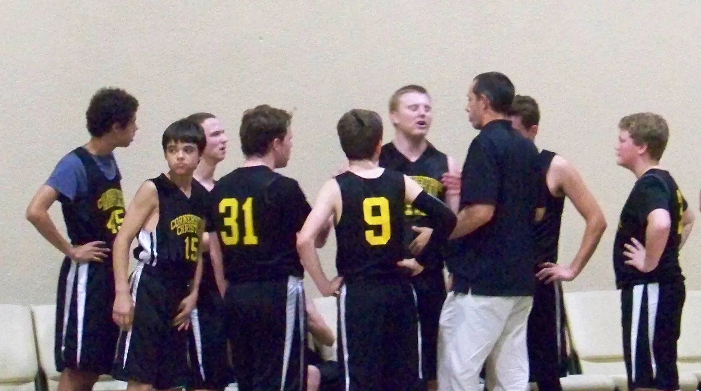
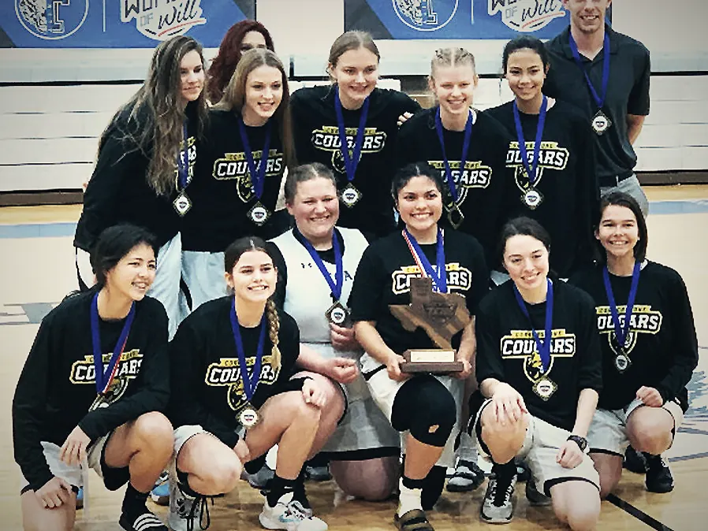
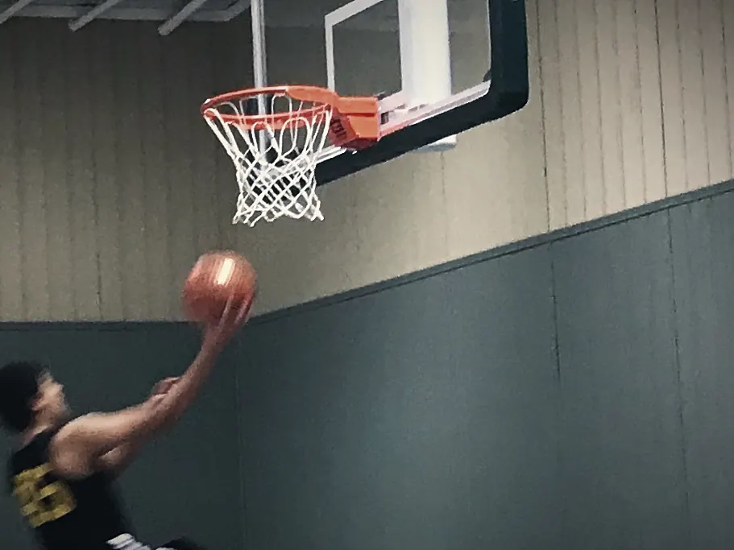
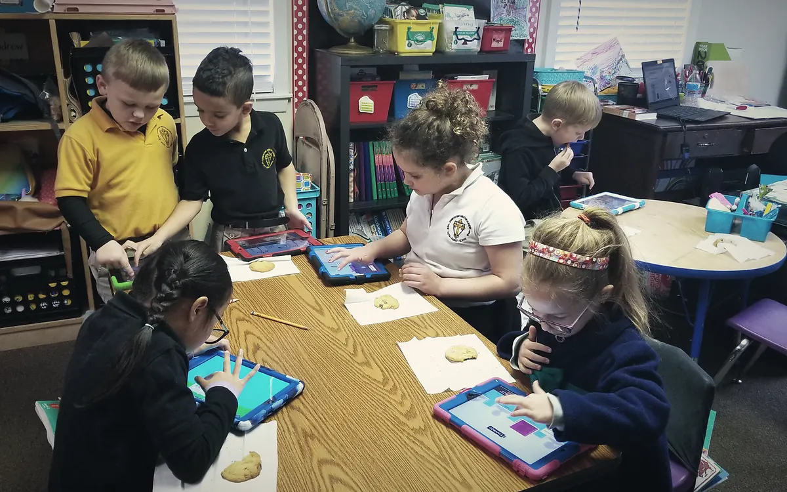
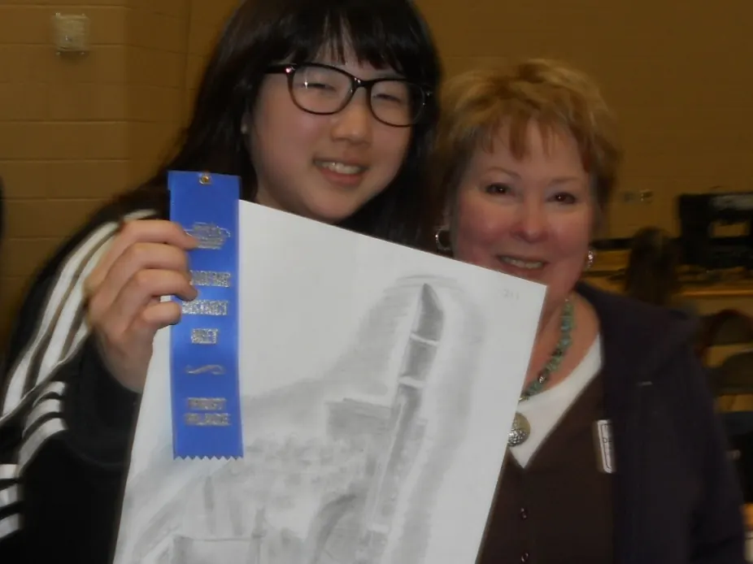
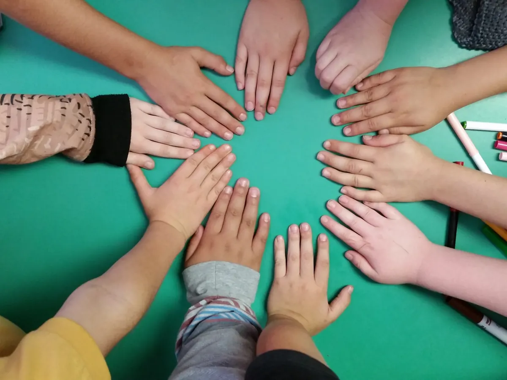
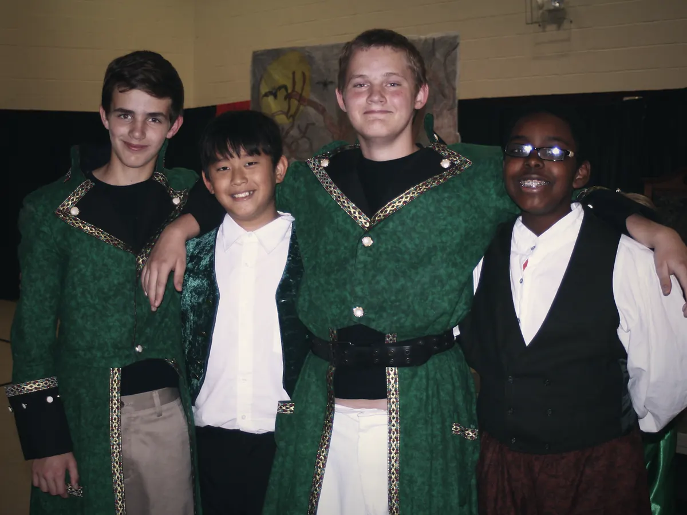
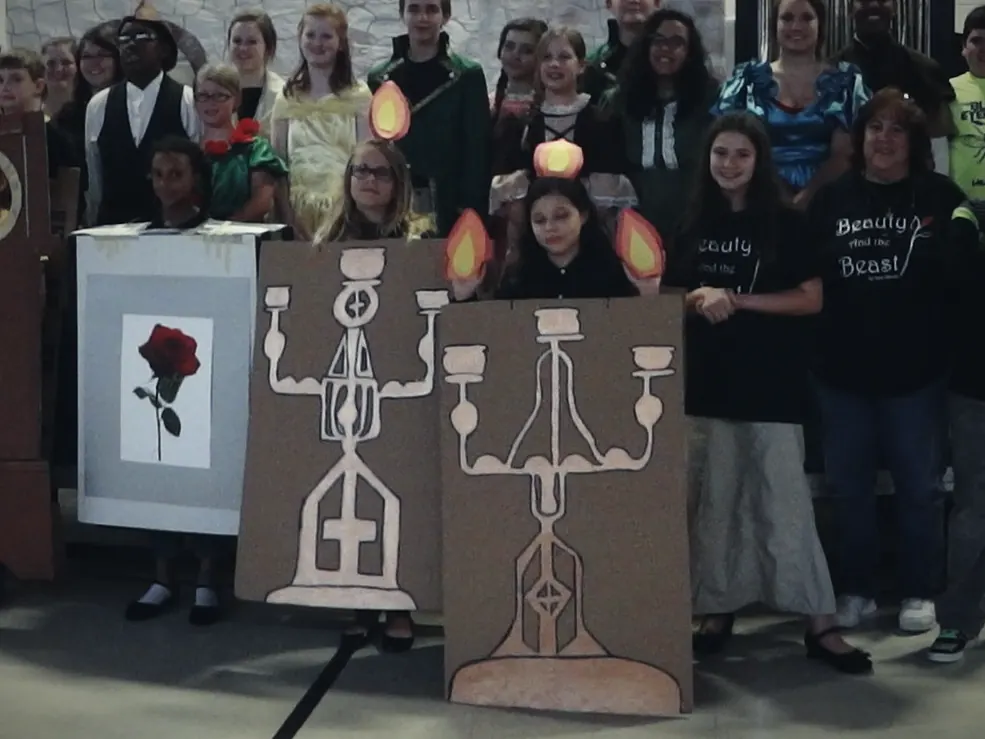

More than the core.
Athletics, languages, the arts and technology — part of every Cornerstone week.
Back to back.
State champions.
The Lady Cougars claimed a second straight Texas Christian Athletic League Class 2A title — 60 to 30 over Marshall Christian.


Some sports are offered together with BVCHEA.
Every afternoon, something new.
Enrichment is built into every school day. Afternoons bring Bible, computers, Spanish, art, music and PE.

Every medium, every age.
Students try many kinds of art in many different mediums, and enter local art contests.


George Bush Presidential Library
Annual Art and Essay Contest, with Cornerstone winners in 2022.
Benjamin Knox Gallery
A local gallery where Cornerstone students have won awards.
Arts Council of the Brazos Valley
Regional contests where Cornerstone students have won awards.
Skills for the 21st century.
Every student uses the computer lab, with courses that grow as they do.
Keyboarding
Typing and computer skills with Keyboarding Without Tears.
Microsoft Office
Word, Excel and PowerPoint, put to work.
Programming & design
Web design, game design in JavaScript, programming, business information systems and AP Computer Science Principles.
Spanish — and American Sign Language.
Spanish is part of the afternoon program, and Middle School students can also choose American Sign Language as an elective.
Spanish
Part of the afternoon program.
American Sign Language
A Middle School elective.
Music that glorifies our Creator.
Elementary music gives equal time to singing, music theory and music appreciation. Students sing at the Thanksgiving and Christmas programs.
Elementary music
Hymns, Bible verses set to music, choral singing, and a few silly songs too.
Band
From 4th grade: flute, clarinet, trumpet or trombone, with group and semiprivate lessons. An additional monthly fee applies.
Room to explore.
Each semester, students choose electives. Past choices include drama, technology and engineering, athletics, psychology, foreign language and art.


Drama
Students take the stage in school productions, costumes and all.
Robotics Club
In its first year in the BEST Robotics competition (2011), the club placed first in the region.